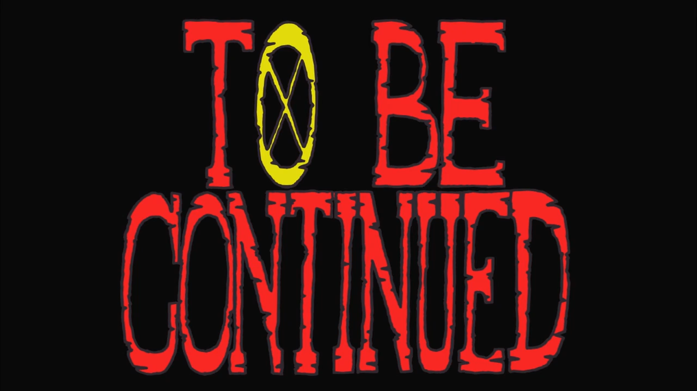
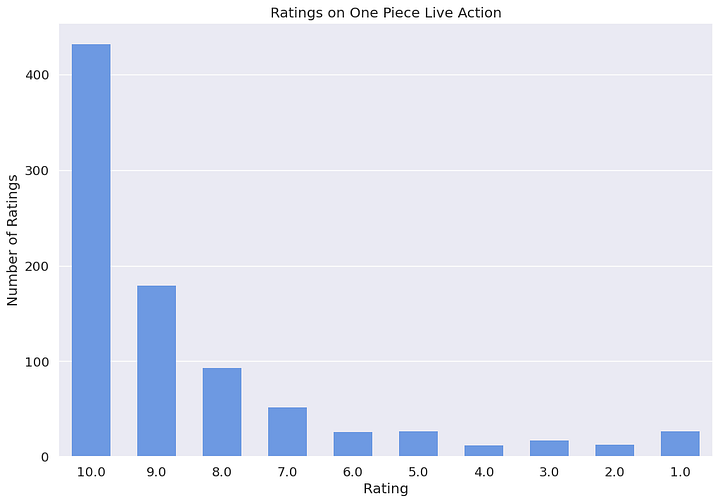
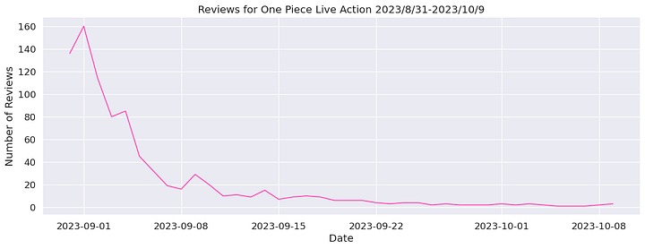
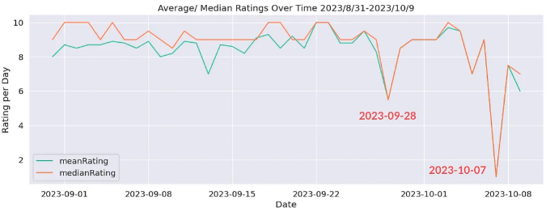
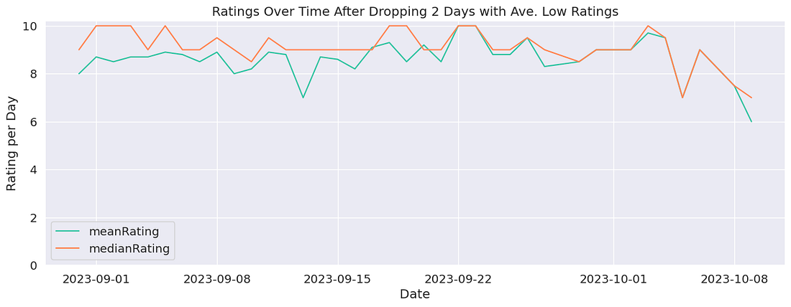
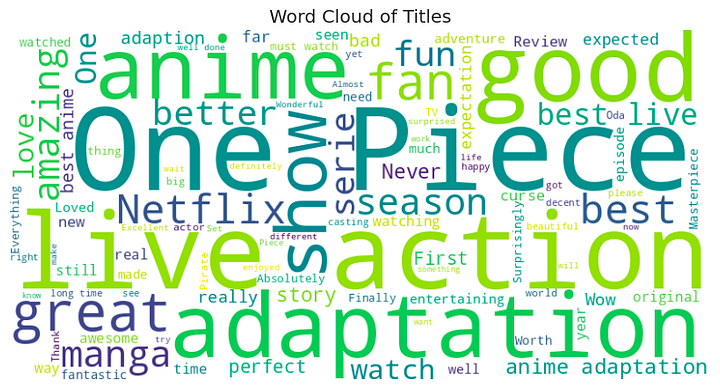
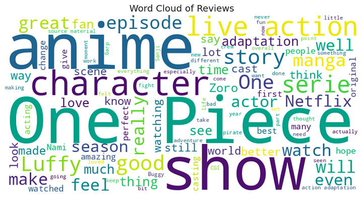

海賊王真人版 IMDB 影評探索性資料分析
程式語言跟平台: Python, Google Colaboratory
數據來源: One Piece Live Action IMDB Reviews
Medium 文章: ML Project (2)- 海賊王真人版 IMDB 影評探索性資料分析
介紹
分析目標與問題
想回答的問題有兩個：
- 海賊王真人版影集是否稱得上是商業成功？不滿意的觀眾是否多為原著粉？
- 訓練一個分類的 ML 模型去預測每一則評論的主觀情感（正面、負面或中性的）及情緒。
分析方式
- 視覺化敘述統計 EDA: 數值型資料 “Rating”- 長條圖 + 折線圖；文本資料 “Reviews” & “Title”- 文字雲
- 文本情感分析 + ML 模型 (Logistic Regression) 分類評論的主觀情感
這個數據集
- 目前有 878 則評論
- 平均評分是 8.52 （數據清理後）
- 開播日 August 31, 2023
- 資料擷取到 October 10, 2023
- 遺漏值百分比 0.9%
- 應變數為 Rating
- 預測變數為 “Reviews”
Pipeline
To be completed....
描述統計 EDA
評分 Rating 分布
 從評分的數量來看，有一半的評論給了10分滿分，20%的人給了9分，11%的人給了8分，~19%的人給低於8分
自開播日以來，在 IMDb 上每日的評論數量

絕大多數的觀眾/ 評論者在開播後幾天內到 IMDb 網站留下評論
~第十天以後，每天的評論數量降至20則以下
不到一個月，每天僅有一兩則評論
insight: 電視劇的成敗很大程度取決於開播後短時間內的熱度
action: 開播前的宣傳最為重要，熱度過去後討論度下降的速度很快，此時的宣傳可能沒有開播前宣傳有效。
IMDb 評論的每日平均給分 + 給分的中位數

在 9/22 前，大多數的評論者給了十分的好評（median > mean）
隨著時間的日平均有趣的地方在於，圖中有兩處低分
於是我去抓了這兩天的評論，一共三則，內容大概是在說任用了年齡較大的演員、沒看過原著看不懂、演員演技不好。
接著，為了讓評分的趨勢更清楚，我將這三則評論視為outliers，drop掉再畫一次折線圖

Oops! 十月初開始平均評分看起來有往下掉的趨勢，即使如此，依然有8分左右的高分
需要再收集接下去日期的評論才能確定觀眾對海賊王真人版評價是否隨著時間下降
文字雲 (Word Cloud)
在文本分析以前，先做了文字雲大致看一下評論標題跟內容出現較多的字是什麼   這次的描述統計差不多就這樣囉。
ML 模型比較
To be completed....
限制與建議方向 (limitations & future directions)
To be completed....